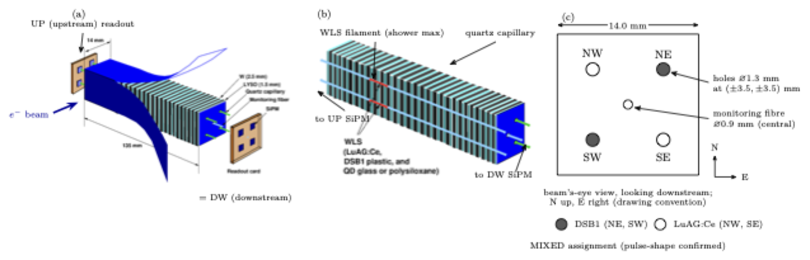
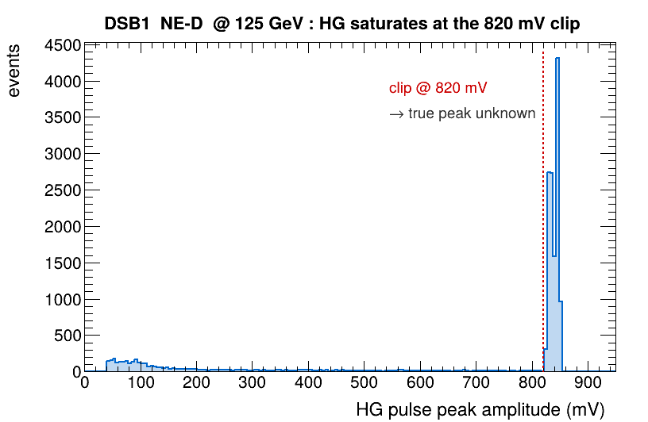
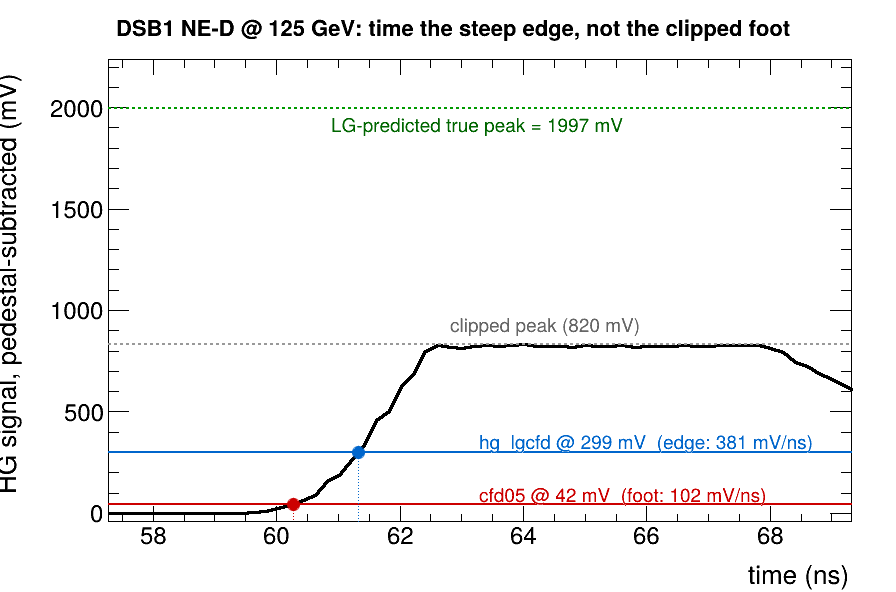
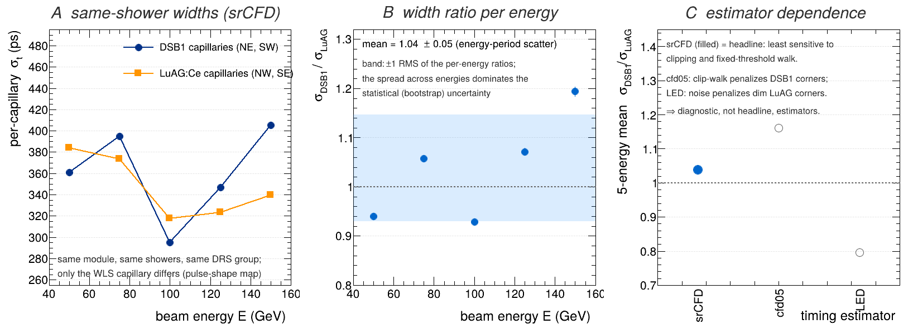
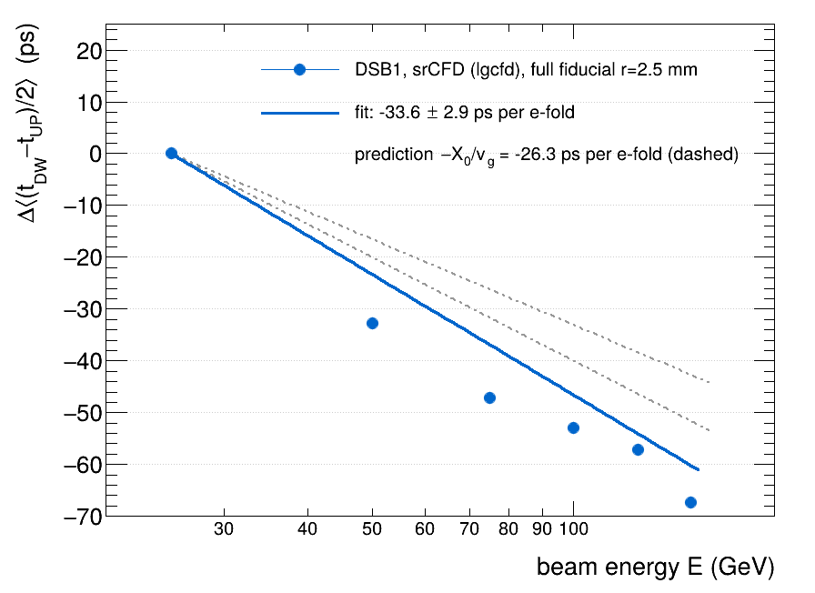
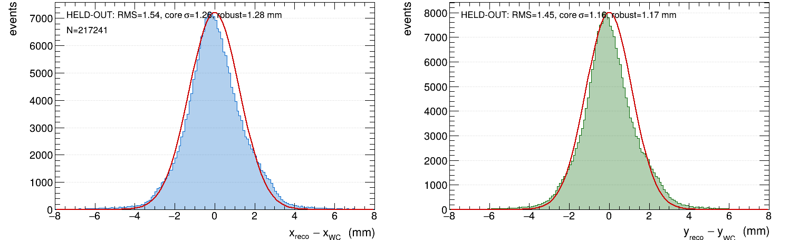

EM calorimetry
for the RADiCAL Collaboration
Instrumentation — Calorimetry & Scintillators
Why fast-timing EM calorimetry
- Future colliders & fixed-target experiments — muon collider, FCC, beam-dump & target monitoring — need the time of an EM shower, not just its energy.
- Picosecond timing rejects out-of-time pileup and beam-induced background, and enables 4-D shower reconstruction.
- RADiCAL samples the shower at its maximum — where the signal is largest and most localized — with WLS capillaries reading light to SiPMs at both ends.
An ultra-compact shower-maximum module

Four builds — the WLS capillary is the variable
| Build | WLS capillary | Light | Energies |
|---|---|---|---|
| DSB1 | organic (bright) | high | 25–150 GeV |
| LuAG:Ce | ceramic | ~3× less | 50–150 |
| MIXED | DSB1 + LuAG, opposite diagonals | both | 50–150 |
| TENERGY | 3× DSB1 + 1 energy capillary | high | 50–150 |
Does a cross-build timing difference come from the light collected, or the intrinsic kinetics of the wavelength shifter?
Builds up front · parent result: 27 ps published, NIM A 1068 (2024) 169737.
Recovering the saturated edge — srCFD


25.7 ps at shower maximum

Detected light — not WLS species — sets the timing

- The cross-build gap is light, not intrinsic re-emission kinetics — within this geometry & these light levels.
Timing tracks shower-maximum depth

- Timing carries longitudinal depth information.
- An acceptance-conditional ensemble reading — not a calibrated z (calibration is future work).
- ⇒ where the capillary samples the shower matters, and depends on energy.
Energy & position — same shower-max signals


RADiCAL as a calorimeter test bed
The 2023 results say light yield is the dominant lever and depth is a knob. So make every optical variable a knob we can turn — one at a time, in beam.
Three families, each swappable independently
Scintillator tile
LYSO:Ce crystal (2023) → LuO:Yb ceramic and beyond. Radiation-tolerant candidates.
LuO:Yb — newWLS capillary
Species (DSB1, LuAG:Ce, …) and depth position — adjustable, motivated by the depth dial.
species + positionReadout
New electronics cards with SiPM adapter cards — swap photosensor & front-end.
modular cardsBuilding the test bed
- LuO:Yb ceramic tiles received — drilling capillary holes now.
- New electronics cards in development, with SiPM adapter cards for photosensor swaps.
- Adjustable capillary depth & quick-swap mechanics — turn the depth knob the 2023 data pointed to.
- Modular by design — tiles, capillaries, and cards all change independently.
To T10 — and toward the targets
CERN T10
end of August 2026
Test the test bed: LuO:Yb tiles, adjustable capillary depth, new SiPM/readout cards.
Results that became a design principle
- Now: LuO:Yb tiles drilling, new electronics, adjustable depth → CERN T10, end of August 2026.
- Destination unchanged: 10 ps · 1 mm · 10%/√E.
Thank you — questions welcome. · github.com/jwwetzel/RADiCAL · manuscript in preparation.